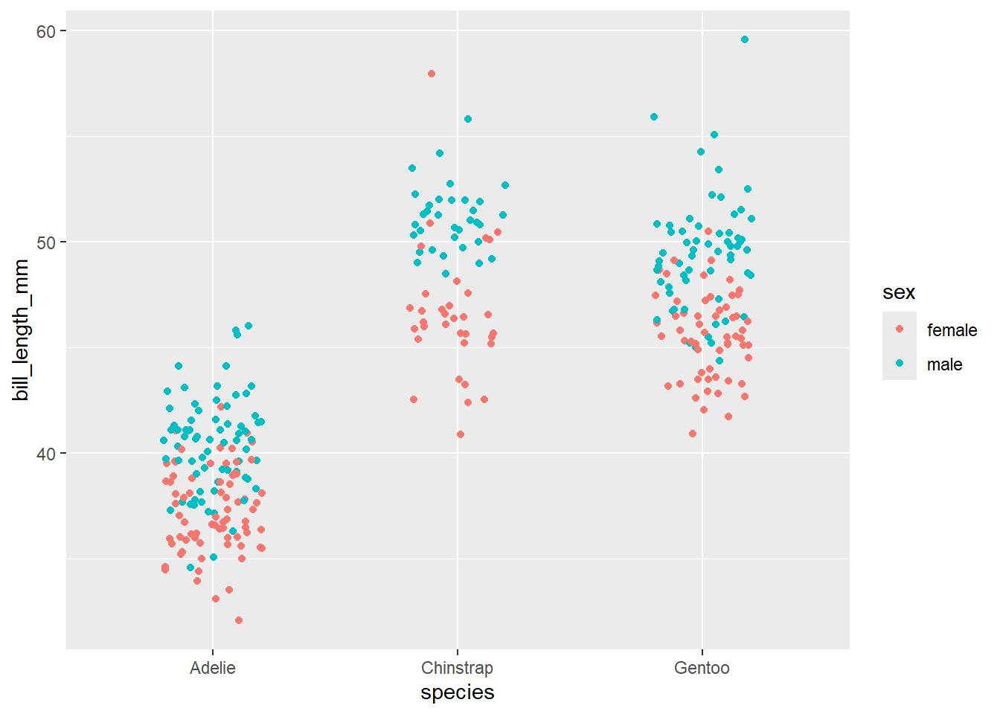
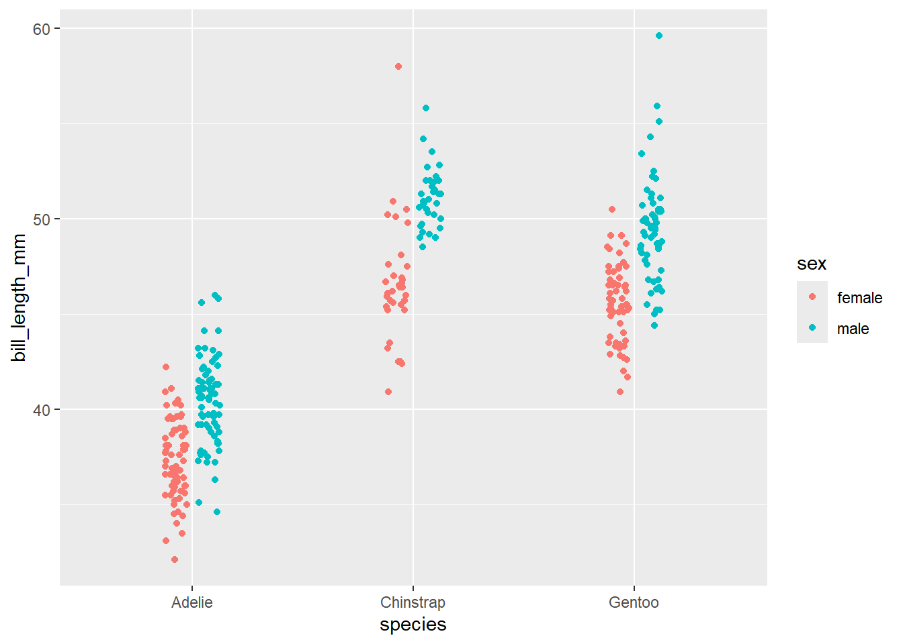

Utilizar ggplot2 para gráficar variables cualitativas y cuantitativas.
Reconocer los distintos elementos que componen un gráfico de ggplot2.
Utilizar distintos tipos de geometrías (geoms) de acuerdo al tipo de variable.
Introducción
La visualización es uno de los aspectos mas importantes para comunicar una idea a partir de un set de datos. R base contiene una serie de herramientas bastante poderosas para crear visualizaciones atractivas y eficientes de manera muy flexible. Sin embargo, dentro de esta flexibilidad se puede crear confusión en el lenguaje para crear un gráfico.
Si bien muchos tipos de visualizaciones en R base son relativamente intuitivos, por ejemplo hist(), barplot(), boxplot(), la cosa se complica cuando se quiere incluir distintas capas o diferenciar grupos (por ejemplo, abline(), par(), etc.)
Por otro lado, ggplot2 es un motor gráfico basado en la gramática grafica de Wilkinson. Bajo este contexto, un gráfico es una serie de capas (layers) similares a una transparecia, con algo impreso en ellas, que puede ser texto, puntos, lineas, barras, o cualquier otro tipo de representación. La imagen final, cada una de estas capas se colocan una sobre otra.
Imagen adaptada de The Grammar of Graphics
Además, ggplot2 se desarrolla dentro de la filosofia de Tidyverse por lo que usa una sintaxis mas simple e intuitiva para el usuario.
Tomemos como ejemplo la base de datos de penguins. Si queremos graficar un boxplot con la longitud del pico de los pingüinos Adelie en todas las islas, en R base seria algo como esto:
penguins <-read_csv("data/palmer_penguins.csv") %>%na.omit()penguins_adeline <- penguins[penguins$species =="Adelie", ]par(mfrow =c(1,3), oma =c(0, 0, 2, 0))boxplot(bill_length_mm ~ sex, data = penguins_adeline, main="isla1")boxplot(bill_length_mm ~ sex, data = penguins_adeline, main ="isla2")boxplot(bill_length_mm ~ sex, data = penguins_adeline, main ="isla3")mtext("Datos de longitud del culmen", outer =TRUE)
dev.off()
null device
1
…mientras que con ggplot podemos usar la siguiente sintaxis:
penguins %>%filter(species =="Adelie") %>%ggplot(aes(x = sex, y = bill_length_mm))+geom_boxplot()+facet_wrap(~island)+labs(title ="Datos de longitud del culmen")
Gramática de las gráficas; geoms y aesthetics
Como se mencionó anteriormente, ggplot2() se basa en la gramática de gráficas la cual consiste en una serie de capas que se superponen entre ellas, por lo que podemos construir los gráficos paso a paso:
Dentro de estas capas, algunas de ellas son necesarias mientras que otras son opcionales
Los elementos necesarios para realizar un gráfico con ggplot son los siguientes:
data:
un data.frame o tibble que contiene los datos que se quieren visualizar. Este tiene que estar en formato tidy
Aestetics (aes): Lista de relación entre las variables
x, y: Variables en el eje x y y
color: Color de las geometrías de acuerdo a los datos
fill: Color de relleno de las geometrías
group: A que grupo corresponde cada geometría
shape: Figura utilizada para cada punto
linetype: Tipo de línea
size: Tamaño de la geometría
alpha: valor de transparencia de la geometría
Objetos geométricos (geom; determina el tipo de gráfico) _ geom_point(): Gráfico de dispersión
geom_line(): Líneas conectando puntos por incrementos en el valor de x
geom_path(): Líneas conectando puntos in una secuencia de aparición
geom_boxplot(): gráfico de cajas y bigotes para variables categoricas
geom_bar(): Gráfica de barras para variables categoricas
geom_histogram(): Histograma para valores de x continuos
geom_smooth(): Líeneas de regresión o correlación entre variables
Poniendo capas: ggplot()
Para empezar a hacer gráficos, vamos a utilizar la base de datos de los pingünios (penguins) que ya hemos utilizado anteriormente. Para crear un gráfico con ggplot se usa el comando ggplot()
Para esto, utilizaremos la base de datos de penguins que ya hemos utilizado anteriormente.
# cargar Tidyverse e importar los datoslibrary(tidyverse)penguins <-read_csv("data/palmer_penguins.csv") %>%na.omit()
ggplot(data = penguins)
Al ejecutar la función, no se genera ningún error pero tampoco vemos ninguna gráfica. Esto se debe a que no hemos indicado a ggplot cuales son las coordenadas y ni las geometrías que queremos graficar.
Para designar los estéticos, definimos el plano usando los datos de la longitud del culmen y la masa corporal ejecutando:
ggplot(data = penguins, mapping =aes(x = bill_length_mm, y = body_mass_g))
El argumento aes() es sinónimo de estética. ggplot2 considera que el eje x y y de la gráfica es estético, junto con el color, el tamaño, la forma, el relleno, etc. Se puede agregar cualquier estética que se desee dentro del argumento aes(), como por ejemplo indicar los ejes x y y, especificando las variables respectivas del conjunto de datos.
La variable en función de la cual el color, tamaño, forma y trazo debe cambiar también se puede especificar aquí mismo. Debes tener en cuenta que la estética especificada aquí será heredada por todas las capas geom() que se agregarán posteriormente.
Sin embargo, aún no vemos ninguna gráfica, ya que para esto es necesario indicar que tipo de geometría (geom()) de gráfica queremos utilizar.
Para crear un diagrama, por ejemplo, de dispersión es necesario agregarle la geometria geom_point(). Es importante recalcar que cada nueva capa que agreguemos al gráfico se agrega con el símbolo +.
ggplot(data = penguins, mapping =aes(x = bill_length_mm, y = body_mass_g))+geom_point()
Aesthetics()
Como mencionamos, es posible agregar diferentes estéticos a la gráfica para controlar diversos aspectos como color, tamaño, forma, etc. Esto nos permite asignarle un estético a los grupos.
por ejemplo, podemos asignarle un color diferente a cada especie con el argumento color
ggplot(data = penguins, aes(x = bill_length_mm, y = body_mass_g, color = species))+geom_point()
En resumen, hasta la forma en que hemos “mapeado” nuestros datos al gráfico es:
bill_length_mm en el eje x
body_mass_g en el eje y
species como color de los puntos
Arriba ya hemos mencionado los tipos de aesthetics que podemos emplear en nuestra gráfica que puede ser:
x, y: Variables en el eje x y y
color: Color de las geometrías de acuerdo a los datos
fill: Color de relleno de las geometrías
group: A que grupo corresponde cada geometría
shape: Figura utilizada para cada punto
linetype: Tipo de línea
size: Tamaño de la geometría
alpha: valor de transparencia de la geometría
De esta forma, podemos mapear mas variables utilizando distintos aesthetics. Por ejemplo, podemos distinguir el sexo de los pingüinos con diferentes formas usando shape
ggplot(data = penguins, aes(x = bill_length_mm, y = body_mass_g, color = species, shape = sex))+geom_point()
o cambiar el tamaño con size
ggplot(data = penguins, aes(x = bill_length_mm, y = body_mass_g, color = species, shape = sex, size = bill_length_mm))+geom_point()
Donde poner los aes?
Los aes() se pueden definir desde que se inicia la función ggplot()pero estos aes se heredaran al resto de las capas. Por otro lado, se pueden definir los aes dentro de cada geom()
ggplot(data = data, aes(x = x, y = y))+geom_point()
es igual que
ggplot()+geom_point(data = data, aes(x = x, y = y))
Dependiendo de lo que queramos comunicar con nuestra gráfica, podemos definir los aesthetics de forma global o específico para cada geom. Por ejemplo:
ggplot(data = penguins, aes(x = bill_length_mm, y = body_mass_g, color = species))+geom_point()+geom_smooth()
`geom_smooth()` using method = 'loess' and formula = 'y ~ x'
ggplot(data = penguins)+geom_point(aes(x = bill_length_mm, y = body_mass_g, color = species))+geom_smooth(aes(x = bill_length_mm, y = body_mass_g))
`geom_smooth()` using method = 'loess' and formula = 'y ~ x'
Diferencia entre aes() y parámetros
Es importante distinguir entre los parámetros que se definen dentro de aes() y los que se definen fuera de este. Los parámetros dentro de aes() están mapeando una variable del conjunto de datos a un estético, mientras que los parámetros fuera de aes() están definiendo un valor fijo para ese estético.
Por ejemplo, observa que pasa cuando definimos el color dentro y fuera de aes() en al siguiente gráfica:
Entonces, ¿por qué los puntos se ven rojos? ¿No debería ser azul?
Esto se debe a la distinción entre mapeo y configuración de un estético. Cuando definimos el color dentro de aes(), estamos mapeando el color a una variable del conjunto de datos, en este caso, a un valor constante “blue”. Sin embargo, al no haber una columna llamada “blue” en el conjunto de datos, ggplot2 asigna un color por defecto (rojo) a los puntos.
Para hacer que los puntos sean azules, debemos definir el color fuera de aes() como un parámetro:
Ejercicio: Un geom_point() es un geom_point() es un geom_point()
Utilizando tus conocimientos previos, crea un gráfico de dispersión con la base de datos de penguins donde se muestre la longitud del pico en el eje x y la profundidad del pico en el eje y. Utiliza el color para distinguir las especies.
Ademas, agrega un punto con el valor promedio de la longitud y profundidad del pico de cada especie en color gris.
ver codigo
#make a dataframe with mean values of bill_depth_mm and bill_length_mmpromedios <- penguins %>%group_by(species) %>%summarise(mean_bill_length =mean(bill_length_mm, na.rm =TRUE),mean_bill_depth =mean(bill_depth_mm, na.rm =TRUE))ggplot()+geom_point(data = penguins, aes(x = bill_length_mm, y = bill_depth_mm, color = species)) +geom_point(data = promedios, aes(x = mean_bill_length, y = mean_bill_depth), size =5, color ="grey")
Breve tour por las distintas geometrias
Los nombres de las funciones de geometría siguen el patrón: geom_X donde X es el nombre de la geometría. Algunos ejemplos incluyen geom_point, geom_bar y geom_histogram.
A continuación repasaremos algunas de las geometrías mas comunes:
Variables continuas
Para facilitar el tour, vamos a generar un objeto con las coordenadas de la longitud del pico distinguiendo en diferente color de relle
base <-ggplot(penguins, aes(x = bill_length_mm, fill = species))
Los histogramas y los poligonos de frecuencia son dos formas comunes de visualizar la distribución de una variable continua. Tanto los histogramas como lo polígonos de frecuencia trabajan de la misma forma: dividen el rango de valores de la variable en intervalos (o “bins”) y cuentan cuántos valores caen en cada intervalo. La diferencia principal entre ambos es que los histogramas muestran estos conteos como barras, mientras que las densidades representan la distribución como una curva suave.
Es posible controlar el ancho de los bins con el parámetro binwidth = dentro de geom_histogram()
geom_histogram()
base +geom_histogram()
`stat_bin()` using `bins = 30`. Pick better value with `binwidth`.
geom_density()
El gráfico de densidad genera una estimación de la densidad de probabilidad de una variable numérica. Es básicamente una versión suavizada de un histograma: en lugar de mostrar barras por intervalos, dibuja una curva continua que representa dónde se concentran más los valores. Internamente usa el método KDE (Kernel Density Estimation) para suavizar la distribución.
base +geom_density()
geom_qqplot()
Un gráfico Q-Q (Quantile-Quantile) compara la distribución de una variable con una distribución teórica, como la normal. En un gráfico Q-Q, los cuantiles de la variable se trazan contra los cuantiles de la distribución teórica. Si los puntos siguen aproximadamente una línea recta, indica que la variable sigue esa distribución.
ggplot(penguins, aes(sample = bill_length_mm, color = species)) +geom_qq()+geom_qq_line()
Variables discretas
geom_bar() y geom_col()
Las gráficas de barras son una de las visualizaciones mas comunes. ggplot ofrece dos alternativas dependiendo del formato de los datos que se vayan a graficar. Una descripción mas detallada sobre la diferencia entre ambos se puede encontrar aquí.
Recordemos en nuestra sesión pasada que podemos contar el número de apariciones de un elemento dentro de un grupo con la función count()
penguins %>%count(species)
# A tibble: 3 × 2
species n
<chr> <int>
1 Adelie 146
2 Chinstrap 68
3 Gentoo 119
De manera análoga, geom_bar() calculará el número de ocurrencias en cada nivel de una variable categórica.
ggplot(penguins, aes(x = species))+geom_bar()
Por el contrario, si queremos que muestre un valor ya establecido en los datos, tenemos que incorporar el parámetro stat = "identity".
penguins %>%count(species) %>%ggplot(aes(x = species, y = n))+geom_bar(stat ="identity")
Por otro lado, geom_col() es lo mismo que geom_bar(stat = "identity"), por lo que si tus datos contienen groupos y el número de apariciones de cada uno de estos, puedes utilizar esta función
penguins %>%count(species) %>%ggplot(.,aes(x = species, y = n))+geom_col()
Podemos incorporar mas variables discretas dentro de los aes() incorporando la variable fill=
Por default, geom_bar() nos arrojará una gráfica de barras apiladas. Si queremos poner cada grupo por separado, incorporamos el parámetro position = "dodge"
ggplot(penguins, aes(x = species)) +geom_bar(aes(fill = sex), position ="dodge")
O usar position="fill" para que nos arroje valores proporcionales
ggplot(penguins, aes(x = species, fill = sex)) +geom_bar(position ="fill")
Ejercicio: Una galaxía muy lejana…
Abre la tabla starwars.csv que se encuentra en el directorio de databases y utilizando pipes genera los siguientes objetos:
Una gráfico de densidad donde se compare la distribución de los valore de altura height de los planetas Tatooine y Naboo, excluyendo los androides.
Una gráfica de barras de los mismos planetas y excluyendo androides donde se muestre la proporción de sexos.
Una gráfica de barras donde se muestre el número de personajes de cada planeta del filme A New Hope
ver codigo
starwars <-read_csv("data/starwars.csv")#ejercicio e1starwars %>%filter(homeworld %in%c("Tatooine", "Naboo")) %>%filter(species !="droid") %>%ggplot(., aes(x = height, fill = homeworld))+geom_density(alpha =0.4)# ejercicio e2starwars %>%filter(homeworld %in%c("Tatooine", "Naboo")) %>%filter(species !="droid") %>%ggplot(.,aes(x = homeworld, fill = sex))+geom_bar(position ="fill")# ejercicio e3starwars %>%filter(str_detect(films, "A New Hope")) %>%ggplot(., aes(x = homeworld)) +geom_bar()### ejrcicio 3 alternativostarwars %>%filter(str_detect(films, "A New Hope")) %>%count(homeworld,sort =TRUE) %>%ggplot(aes(x = homeworld, y = n)) +geom_col(fill ="steelblue")
Tip
Un problema con el ejercicio 3 anterior es que las barras están ordenadas en orden alfabético, lo cual hace ggplot por default cuando utilizamos factores.
En lugar de ordenar lo factores a mano, podemos hacerlo de forma automática con la función reorder() de R base en el eje x, es decir, en el aes x.
starwars %>%filter(str_detect(films, "A New Hope")) %>%count(homeworld,sort =TRUE) %>%ggplot(aes(x =reorder(homeworld, n), y = n)) +geom_col(fill ="steelblue")
Busca la documentación de reorder(). Puedes leer mas sobre como ordenar factores en R [aquí]https://guslipkin.medium.com/reordering-bar-and-column-charts-with-ggplot2-in-r-435fad1c643e){target=“_blank”}.
Variable discreta + variable continua
Boxplot (diagrama de cajas y bigotes)
Un diagrama de cajas y bigotes, también conocido como boxplot, es una representación gráfica que proporciona una descripción visual de la distribución de un conjunto de datos. Este tipo de gráfico es particularmente útil para resumir la variabilidad y la dispersión de los datos, así como para identificar la presencia de valores atípicos.
La caja de un boxplot comienza en el primer cuartil Q1 (25%) y termina en el tercero Q3 (75%). Por lo tanto, la caja representa el 50% de los datos centrales, con una línea que representa la mediana. A cada lado de la caja se dibuja un segmento con los datos más lejanos sin contar los valores atípicos (outliers) del boxplot, que en caso de existir, se representarán con círculos.
Partes de un boxplot de una distribución normal. Imagen tomada de Byjus.com
Un boxplot es una excelente forma de visualizar la dispersión de los datos categóricos. Para crear un boxplot, utilizamos la función geom_boxplot(). Por ejemplo, si queremos ver la longitud del pico de los pingüinos por especie, podemos hacer lo siguiente:
ggplot(data = penguins, aes(x = species, y = bill_length_mm))+geom_boxplot()
Al igual en los geom anteriores, podemos cambiar el color de relleno de las cajas con el parámetro fill = dentro de aes()
Un gráfico de violín es una extensión del boxplot que muestra la distribución de los datos a través de una estimación de densidad. En lugar de mostrar solo los cuartiles y la mediana, el gráfico de violín también muestra la forma de la distribución de los datos, lo que permite ver si hay múltiples picos o si la distribución es simétrica o asimétrica.
Para utilizar un gráfico de violín, utilizamos la función geom_violin(). Por ejemplo, si queremos ver la longitud del pico de los pingüinos por especie, podemos hacer lo siguiente:
ggplot(data = penguins, aes(x = species, y = bill_length_mm, fill = sex))+geom_violin()
geom_point() y geom_jitter()
La función geom_point() es una función versátil ya que nos permite crear gráficos de dispersión (mas adelante) o para visualizar la dispersión de datos categóricos. Por ejemplo, si queremos ver la longitud del pico de los pingüinos por especie y sexo, podemos hacer lo siguiente:
ggplot(data = penguins, aes(x = species, y = bill_length_mm, color = sex))+geom_point()
Esta visualización es poco útil ya que todos los puntos se traslapan. Para poder separar cada uno de los grupos (sexo) necesitamos incluir el parámetro position = para darle espacio entre cada grupo.
El parámetro position = se puede incluir en cualquier tipo de geoms, no solo en los puntos, y permite ajustar el traslape entre grupos. Tiene varias opciones. Entre las mas útiles que utilizaremos en este curso se encuentra:
position_dodge(): Esquiva el traslape lado a lado entre objetos
position_jitter(): Agrega una dispersión aleatoria en el eje x a los puntos para eviar que se traslape
position_jitterdodge(): Agrega de forma simultanea un jitter y dodge a los puntos
position_identity(): No ajusta la posición de los puntos
Para evitar el traslape entre los puntos, podemos utilizar el parámetro position = position_dodge(). Por ejemplo:
ggplot(data = penguins, aes(x = species, y = bill_length_mm, color = sex))+geom_point(position =position_dodge(0.2))
o podemos utilizar el parámetro position = position_jitter() que agrega un desplazamiento aleatorio a los puntos en el eje x. Por ejemplo:
ggplot(data = penguins, aes(x = species, y = bill_length_mm, color = sex))+geom_point(position =position_jitter(0.2))

Finalmente, podemos incorporar el parámetro position_jitterdodge() para disminuir el traslape entre los puntos entre y dentro de cada grupo
ggplot(data = penguins, aes(x = species, y = bill_length_mm, color = sex))+geom_point(position =position_jitterdodge(dodge.width =0.3, jitter.width =0.1))

¿Jitter? 🤷️
En dotplots, el jitter se refiere al desplazamiento aleatorio de puntos de datos individuales a lo largo del eje para evitar superposiciones, proporcionando una representación más clara de la distribución de datos.
Dado que el valor es aleatorio, cada que se genere la gráfica, el desplazamiento de cada puto puede variar un poco sobre el eje x, pero su valor real (eje y) no se verá afectado.
Visualización de una variable continua + una continua
Este tipo de visualizaciones nos permite ver la relación entre dos variables continuas. Hay diversos geoms que podemos implementar, pero el más común es nuevamente geom_point().
Por ejemplo, si queremos ver la relación entre la longitud del pico y la masa corporal de los pingüinos, podemos hacer lo siguiente:
ggplot(data = penguins, aes(x = body_mass_g, y = bill_length_mm, color = sex))+geom_point()
Visualización de resumenes estadisticos: geom_errorbar()
Muchas veces queremos mostrar de forma clara y sencilla como se comportan nuestro datos, por lo que podemos mostrar solamente algunos estadísticos básicos, como el promedio y el grado de dispersión de los datos usando ya sea la desviación estándar o el error estándar. Esto lo podemos lograr utilizando funciones como geom_point() en conjunto con barras de dispersión con la función geom_errorbar().
Al igual que otros geoms, geom_errorbar() requiere que indiquemos su posición en el eje x, pero también requiere que indiquemos sus limites superior e inferior sobre el eje y con los parámetros ymax = y ymin =, respectivamente.
Para esto, primero necesitamos calcular estos estadísticos antes de gráficarlos.
Por ejemplo, calculemos el promedio y la desviación estándar de la longitud del pico para cada especie de pingüinos, por sexo.
# A tibble: 6 × 15
species sex variable n min max median q1 q3 iqr mad mean
<chr> <chr> <fct> <dbl> <dbl> <dbl> <dbl> <dbl> <dbl> <dbl> <dbl> <dbl>
1 Adelie fema… bill_le… 73 32.1 42.2 37 35.9 38.8 2.9 2.08 37.3
2 Adelie male bill_le… 73 34.6 46 40.6 39 41.5 2.5 2.08 40.4
3 Chinstr… fema… bill_le… 34 40.9 58 46.3 45.4 47.4 1.95 1.48 46.6
4 Chinstr… male bill_le… 34 48.5 55.8 51.0 50.0 52.0 1.92 1.48 51.1
5 Gentoo fema… bill_le… 58 40.9 50.5 45.5 43.8 46.9 3.02 2.37 45.6
6 Gentoo male bill_le… 61 44.4 59.6 49.5 48.1 50.5 2.4 1.93 49.5
# ℹ 3 more variables: sd <dbl>, se <dbl>, ci <dbl>
Desafio pingüinos
Realiza una gráfica de barras donde se muestre el promedio \(\pm\) desviación estándar de la longitud del pico de cada especie y sexo. Distingue los sexos por el color de relleno de las barras.
Recuerda que puedes incluir el parámetros position = position_dodge() para separar las barras entre grupos
ver codigo
penguins %>%group_by(species, sex) %>%summarise(promedio =mean(bill_length_mm, na.rm =TRUE),desvest =sd(bill_length_mm, na.rm=TRUE), .groups ="drop") %>%ggplot(., aes(x = species, y = promedio, fill = sex)) +geom_col(position =position_dodge(), color ="black")+geom_errorbar(aes(ymin = promedio - desvest, ymax = promedio + desvest),width =0.5, position =position_dodge(0.9))
Warning
Los amigos no permiten que sus amigos hagan gráficas de barras
Muchas veces al presentar los datos de una investigación nos vamos directamente a mostrar el promedio \(\pm\) desviación estándar o algún otro valor de dispersión pero puede que esto no muestre toda la verdad sobre la distribución de los datos. Como demostración haz el siguiente ejercicio:
Abre la tabla datos_demo.csv que se encuentra en la carpeta de datos
Sin hacer ningún tipo de observación previa, haz una gráfica donde se muestre el promedio \(\pm\) desviación estándar. Para ello, utiliza las funciones group_by() y summarise() que hemos visto anteriormente.
Ahora, utilizando el set de datos completo, gráfica la dispersión de los datos con geom_point() y añade un boxplot con geom_boxplot().
ver codigo
demo <-read_csv("data/datos_demo.csv")# promediosdemo %>%group_by(grupo) %>%summarise(promedio =mean(valor),desvest =sd(valor)) %>%ggplot(.,aes(x = grupo, y = promedio, fill = grupo))+geom_col()+geom_errorbar(aes(ymin = promedio - desvest, ymax = promedio + desvest),width =0.3)# datos completosdemo %>%ggplot(.,aes(x = grupo, y = valor, color = grupo))+geom_boxplot()+geom_point(position =position_jitterdodge(0.2))
¿Que conclusiones puedes sacar de ambas gráficas?
El uso de histogramas, densidades o gráficas de dispersión nos permite hacer un análisis exploratorio de los datos, permitiendo tomar mejores decisiones sobre el tipo de estadísticos o procesamiento que se van a utilizar.
Puedes encontrar una discusión mas profunda sobra la importancia de la correcta presentación e interpretación de datos en publicaciones científicas aquí.
Ejercicio
Recrea el gráfico de dispersión de los pingüinos que se muestra al inicio de esta sección, donde se muestre la longitud del pico en el eje x y la profundidad del pico en el eje y. Utiliza el color para distinguir las especies y agrega un punto con el valor promedio de la longitud y profundidad del pico de cada especie en color gris.
Ahora, agrega barras de error que representen la desviación estándar de la longitud y profundidad del pico de cada especie.
ver codigo
#make a dataframe with mean values of bill_depth_mm and bill_length_mmpromedios <- penguins %>%group_by(species) %>%summarise(mean_bill_length =mean(bill_length_mm, na.rm =TRUE),mean_bill_depth =mean(bill_depth_mm, na.rm =TRUE),desvest_bill_lenght =sd(bill_length_mm, na.rm =TRUE),desvest_bill_depth =sd(bill_depth_mm, na.rm =TRUE))ggplot()+geom_point(data = penguins, aes(x = bill_length_mm, y = bill_depth_mm, color = species)) +geom_point(data = promedios, aes(x = mean_bill_length, y = mean_bill_depth), size =5, color ="grey") +geom_errorbar(data = promedios, aes(x = mean_bill_length,ymax = mean_bill_depth + desvest_bill_depth , ymin = mean_bill_depth - desvest_bill_depth))+geom_errorbar(data = promedios, aes(y = mean_bill_depth,xmax = mean_bill_length + desvest_bill_lenght , xmin = mean_bill_length - desvest_bill_lenght))
Visualización de series; geom_line()
Un gráfico de líneas es una representación visual de datos que muestra la relación entre dos variables, donde una variable se representa en el eje x y la otra en el eje y. Los puntos de datos se conectan mediante líneas para mostrar tendencias o patrones a lo largo del tiempo o de otra variable continua.
En ggplot geom_line() permite graficar líneas conectando puntos, donde el aestheticsgroup nos permite definir que observaciones estan conectadas.
Para entender mejor esta geometría, utilizaremos el archivo respiracion.csvdentro de la carpeta data el cual contiene valores de consumo de oxígeno diario en un molusco marino bajo dos condiciones experimentales: Control y Tratamiento.
Por el momento, vamos a filtrar los datos para quedarnos con la experimento Control
respiracion <-read_csv("data/respiracion_long.csv")# echamos un vistazo a los datosglimpse(respiracion)
Para graficar los datos de consumo de oxígeno diario, podemos utilizar geom_line() para conectar los puntos de datos. Para esto, necesitamos definir el eje x y el eje y, así como el grupo al que pertenece cada observación, es decir, a cada individuo.
Observa que pasa cuando no definimos el grupo:
ggplot(respiracion_control, aes(x = dia, y = mo2)) +geom_line()
Ahora con el aestheticgroup = individuo:
ggplot(respiracion_control, aes(x = dia, y = mo2, group = individuo)) +geom_line()
Si queremos distinguir los individuos por color, podemos agregar el aestheticcolor = individuo:
ggplot(respiracion_control, aes(x = dia, y = mo2, group = individuo, color = individuo)) +geom_line()
Si queremos distinguir los individuos por color y además agregar puntos en cada observación, podemos agregar geom_point():
ggplot(respiracion_control, aes(x = dia, y = mo2, group = individuo, color = individuo)) +geom_line() +geom_point()
¿Como podrías agregar una línea con los valores promedio de cada individuo?
Podemos calcular el promedio de cada individuo y luego agregarlo al gráfico utilizando geom_line() nuevamente. Primero, calculamos el promedio de mo2 por dia, y luego lo graficamos.
Podemos calcular el promedio de cada individuo y luego agregarlo al gráfico utilizando geom_line() nuevamente. Primero, calculamos el promedio de mo2 por dia, y luego lo graficamos.
ver codigo
promedios_mo2 <- respiracion_control %>%group_by(dia) %>%summarise(promedio_mo2 =mean(mo2, na.rm =TRUE),desvest_mo2 =sd(mo2, na.rm =TRUE), .groups ="drop") ggplot(respiracion_control) +geom_line(aes(x = dia, y = mo2, group = individuo, color = individuo)) +geom_line(data = promedios_mo2, aes(x = dia, y = promedio_mo2, group =1), color ="black")
Visualización de series; geom_ribbon()
Si quisieramos representar de forma resumida el ejercicio anterior, podriamos mostrar el valor promedio en línea solida y las barrar de error en cada día. Otra opción es mostrar las barrar de error con un área sombreada. Para esto, podemos utilizar la geometría geom_ribbon().
De manera similar a las barras de erorr geom_ribbon() requiere los argumentos ymin y ymax los cuales pueden ser los valores calculados de desviación estándar, intervalos de confianza, mínimo y máximo, etc.
ggplot()+geom_line(data = promedios_mo2, aes(x = dia, y = promedio_mo2, group =1),color ="darkred") +geom_ribbon(data = promedios_mo2, aes(x = dia, ymin = promedio_mo2 - desvest_mo2, ymax = promedio_mo2 + desvest_mo2,group =1), fill ="red", alpha =0.1, color ="grey64",linetype ="dashed")